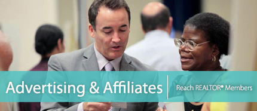

The Greater San Diego Association of REALTORS® reaches out to over 12,000 REALTOR® and Affiliate members through online and print advertising promoting relevant news topics, new business tools, education courses, over 36 SDAR events, including our annual signature Real Estate Expo & Conference and Real Estate Summit events, and much more!
Affiliate search
Contact Sales at sales@sdar.com or call (858) 715-8018 for additional advertising and sponsorship information.
Join as an Affiliate Member to receive advertising discounts and benefits. -
Advertising & Sales Opportunities
{mooblock=The Scoop}
As "The Trusted Voice of San Diego Real Estate," SDAR presents The Scoop - a short monthly video with the latest San Diego housing market statistics and trends moderated by George Chamberlin, Executive Editor of The Daily Transcript. Videos are posted to SDAR.com, on SDAR's YouTube Channel, and distributed via email communication to over 16,000+ real estate professionals monthly. View our current advertising opportunities.
{mooblock=San Diego Real Estate In Focus Market Report}
Be Where the REALTORS® Go. In Focus is a semi-annual market report that provides a review of the industry's economic environment, in conjunction with The London Group, to help REALTORS® navigate through today's economy and understand how changes affect their community. As a sponsor, benefits include: credibility of being aligned with the experts of San Diego's real estate economy, an audience of over 12,000+ real estate professionals, brand longevity with a publication designed to be an achievable source of reference, brand awareness through The London Group's distribution of 8,000+, maximized exposure through SDAR's website, and marketing communications. View our current advertising opportunities.
{/mooblock}
{mooblock=eNews & eEducation}
SDAR's monthly email newsletters are distributed to more than 16,000 real estate professionals and Affiliates throughout San Diego County. The newsletters include timely information about upcoming Association events, industry news, member benefits, upcoming classes, networking mixers, and more! Plus, advertisers have the benefit of hyper linking their advertisement. View our current advertising opportunities.
{mooblock=The REALTOR® Resource Guide & Affiliate Directory}
The REALTOR® Resource Guide and Affiliate Directory is a comprehensive listing of businesses in the region that offer products and services useful to REALTORS®, property owners, and potential buyers and sellers. This guide is a straightforward and effective tool to reach our growing membership. View an online version of the most recent edition. View our current advertising opportunities.
{/mooblock}
{mooblock=The San Diego REALTOR®}
The San Diego REALTOR® is a monthly newspaper-style publication delivered to over 12,000 members that discusses education, events, caravans, statistics, government affairs, risk management, and features articles and other information to keep REALTORS® educated in their area of expertise. An online version is also available on SDAR's website. View our current advertising opportunities. Please note that advertising must adhere to SDAR content guidelines. Please contact Advertising@SDAR.com for questions about restricted content.
{mooblock=Webtile Advertising}
{/mooblock}
{mooblock=Caravan Connection Flyer}
The SDAR Caravan Connection flyer is a printed monthly newsletter distributed at more than 15 local tours and reaches over 700 industry professionals. The flyer features Association updates, professional products and services provided to real estate professionals, educational classes, SDAR benefits, and timely information. This publication is a cost-effective way to reach a broad REALTOR® audience. View our current advertising opportunities.
{/mooblock}
{mooblock=Service Center Video Display}
SDAR has seven service centers located throughout San Diego County where members frequent to update their membership information, take education classes, purchase products, and much more. Be at the forefront of their eyes on our LCD Video Displays with an advertisement promoting your business. Your ad will receive a 30-second display rotation for a month. Our service centers receive over 10,000 member impressions per year. View our current advertising opportunities.
{/mooblock}
Additional Opportunities
{mooblock=Networking Mixer Sponsorships}
SDAR hosts several mixer events throughout the year. Opportunities to sponsor a mixer to a highly targeted audience include: Broker Exchange, Young Professionals Network, Global Real Estate Council, and Commercial Real Estate Alliance of San Diego. Mixer events take place at SDAR Service Centers and other convenient locations throughout San Diego County. Mixer sponsorships are an affordable option to achieve market exposure within a highly target audience.
{mooblock=Education Sponsorships}
SDAR offers over 70 individual classes annually in flexible settings. Classes attract approximately 20-30 attendees per class. While selected opportunities, such as New Member Orientation, SDAR's bi-annual Extravaganzas, and the Brown Bag Educational Seminars, attract approximately over 45 attendees each! Become an Education sponsor today.
{mooblock=Events}
SDAR supports over 36 events annually. As an SDAR event sponsor you will expose your business to thousands of real estate professionals creating quality opportunities to learn, network, and generate business. Some of our signature events include:
- SDAR Annual Real Estate Expo and Conference
- SDAR Real Estate Summit
- Ambassadors Foundations Everyday Heroes Golf Tournament
- SDAR's Annual Holiday House Initiative
- And Many More!
{mooblock=Mailing List Rental}
Address labels of SDAR members are available to purchase for one-time use. You must be an Affiliate or REALTOR® member. Restrictions apply.
Contact Sales at sales@sdar.com or (858) 715-8018 for additional information.
 Annual Partnership Packages
Annual Partnership Packages